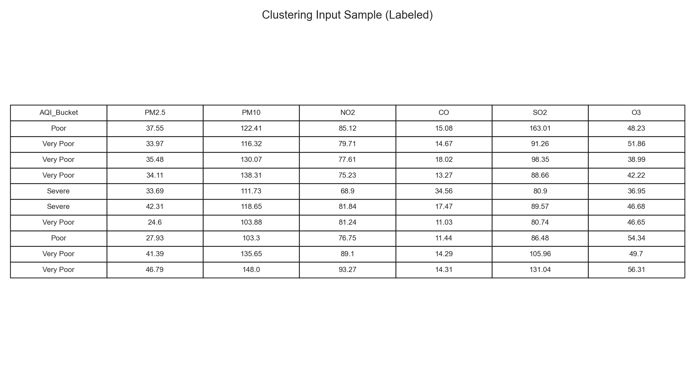
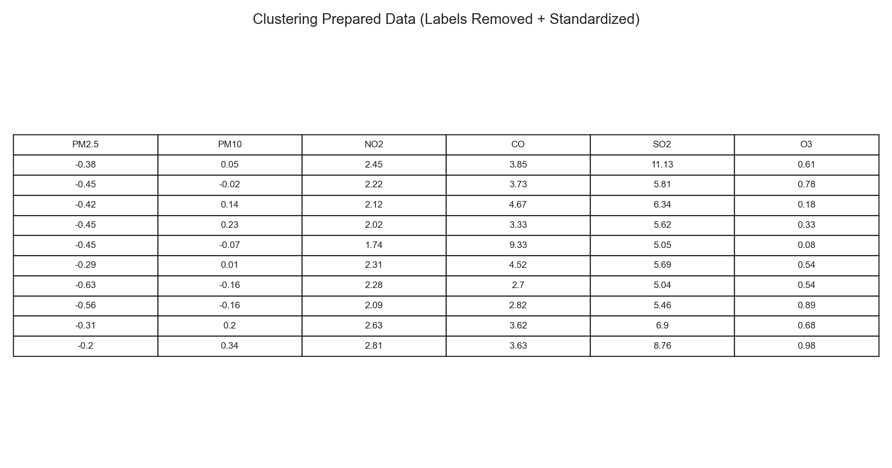
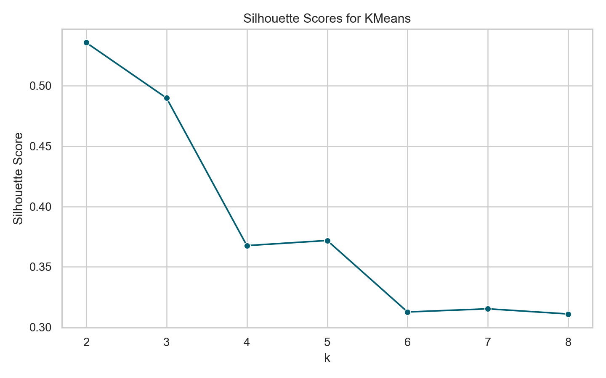
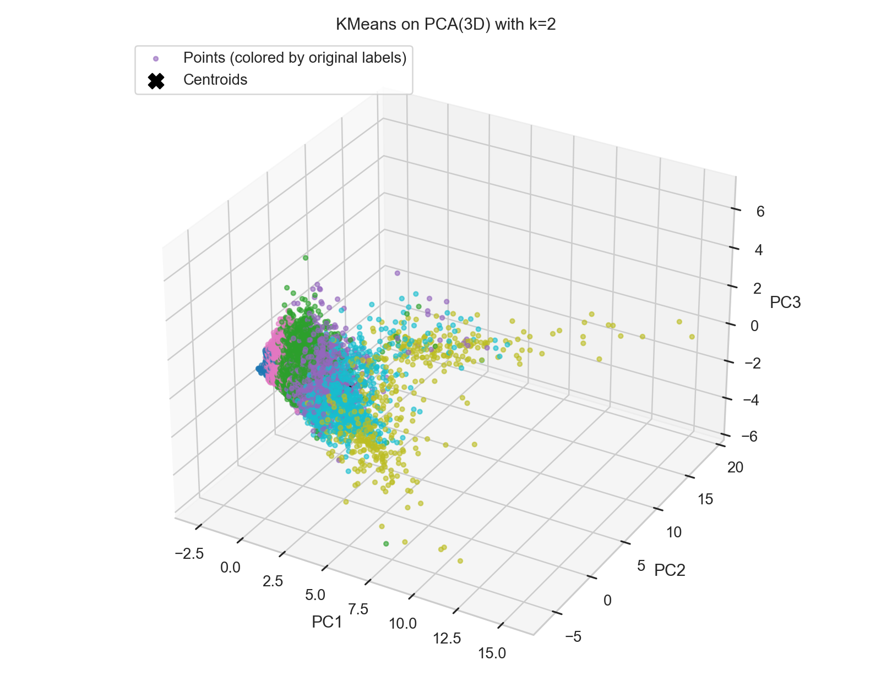
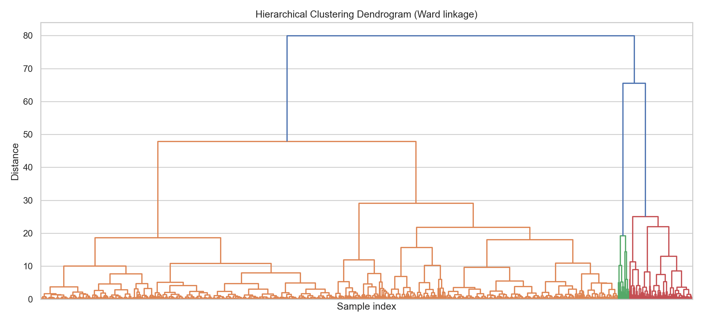
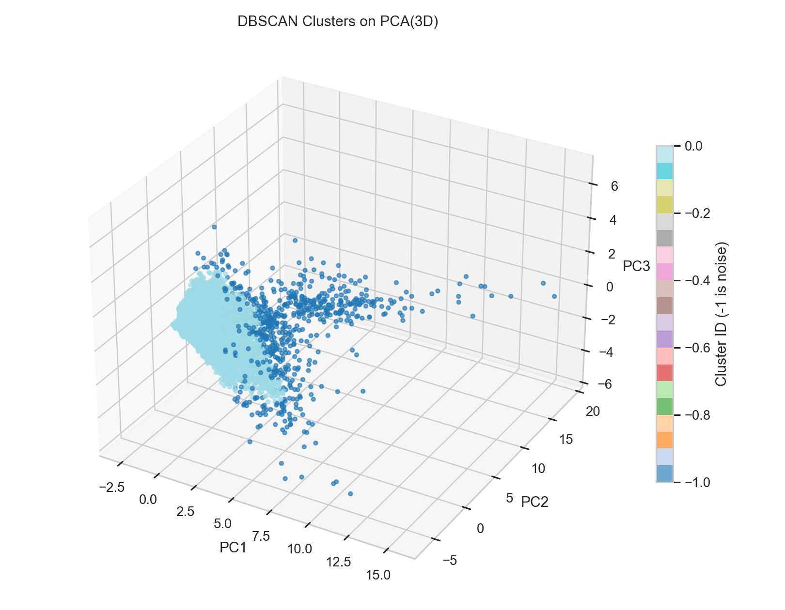

KMeans is a partition-based method that assigns each point to one of k clusters and optimizes compactness around centroids. Hierarchical clustering builds a tree of merges/splits and is useful when you want to inspect nested structure through a dendrogram. DBSCAN is density-based, does not require k in advance, and can mark low-density points as noise, which is useful for anomaly-heavy environmental data.
I used a labeled AQI dataset and kept the original label column separately for later comparison. Then I removed labels from the modeling input, retained quantitative columns only, and standardized the features to mean 0 and standard deviation 1 with StandardScaler.


I also reduced the normalized data to 3 dimensions using PCA for clustering visualizations. The retained variance after PCA(3) is 83.03%.
Using silhouette analysis on candidate values of k, the three best values selected were k = 2, 3, 5. These values were then used for KMeans, and centroid markers were included in each 3D plot.


Hierarchical clustering (Ward linkage) was visualized with a dendrogram. Compared with KMeans, the dendrogram gives a richer view of merge distances and possible cut levels, while KMeans gives cleaner fixed-k partitions.

DBSCAN identified dense regions plus noise points. In this run, DBSCAN produced 2 cluster IDs including noise and flagged 695 points as noise, which highlights potential outlier pollution patterns.

| k | Silhouette Score |
|---|---|
| 2 | 0.5356 |
| 3 | 0.4898 |
| 4 | 0.3676 |
| 5 | 0.3718 |
| 6 | 0.3127 |
| 7 | 0.3153 |
| 8 | 0.3110 |
For this AQI topic, KMeans gave the clearest partitioning when k was chosen by silhouette scores, hierarchical clustering was strongest for interpretation of cluster structure at multiple levels, and DBSCAN was best for detecting noise/outlier behavior. Together, they provide complementary views of pollution pattern groupings rather than one single "best" answer.